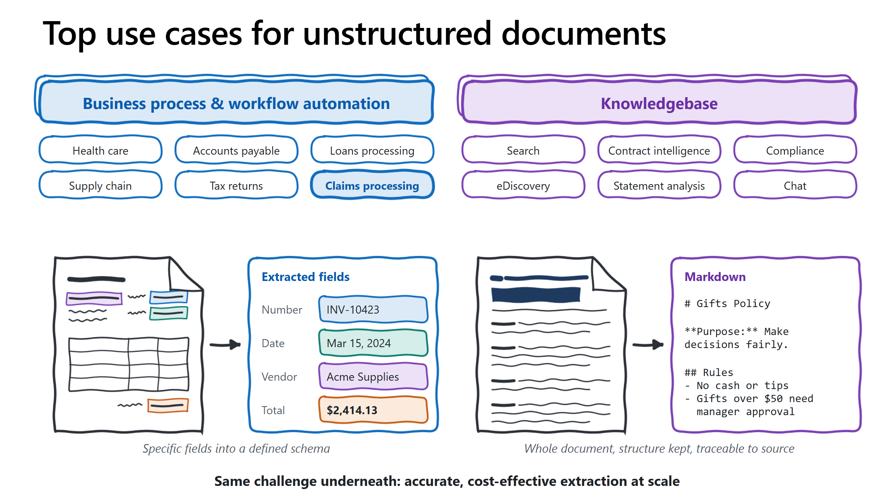
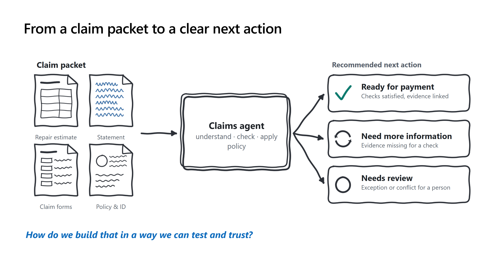
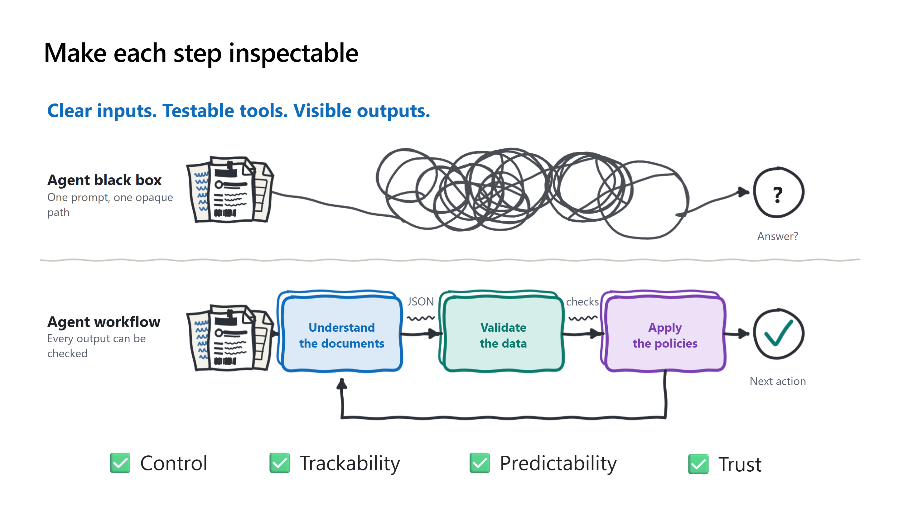
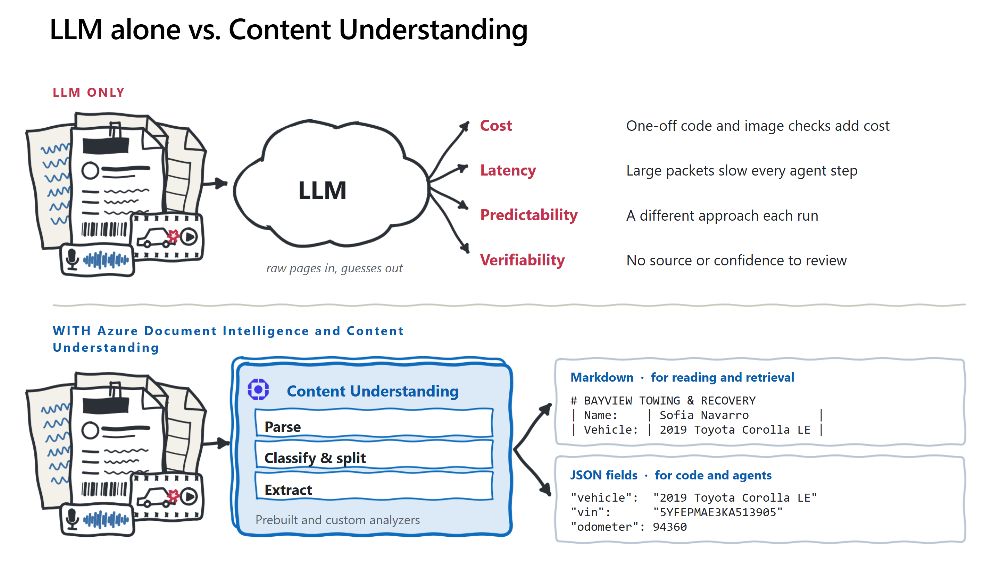
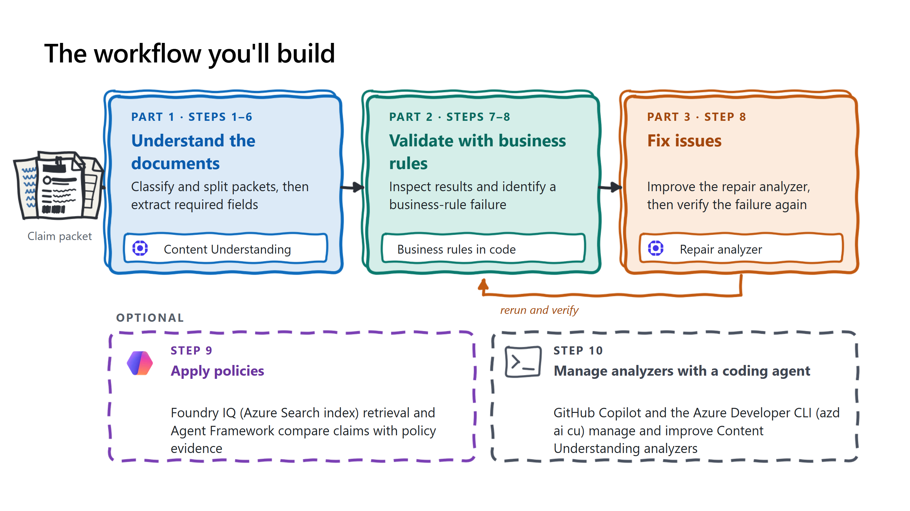
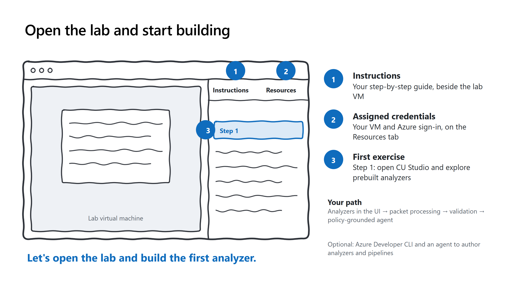

Start with the lab
You will build a claims workflow you can inspect, test, and improve, from incoming documents to a clear next action. Products enter the workflow as you encounter the problems they solve.
In the provisioned lab environment, begin steps 1 and 2 while you read this introduction. The instructions walk you through environment setup and exploring prebuilt analyzers in Content Understanding Studio.


Everyday work, one document packet at a time
Someone receives a packet of documents and works through it carefully. What is each document? Where is the key information? Do the values match across pages? Is anything missing, and which rules and policies apply?
This work is repetitive and detail-oriented, but much of it is also routine and rules-driven. Agents can take on that work so people can focus on exceptions and final decisions.

Two kinds of document work
Business-process automation extracts specific fields into a defined structure that an application or workflow can use. Examples include healthcare, accounts payable, loan processing, claims, tax returns, and supply chains.
Knowledge scenarios preserve the content and structure so an agent can retrieve and reason over it. Search, chat, compliance, eDiscovery, and contract intelligence fit this pattern.
The outputs differ, structured fields versus document content, but the underlying challenge is the same: turn messy content into accurate, cost-effective, traceable inputs for an agent. This lab focuses on claims processing.


From a claim packet to a clear next action
A claim may include claim forms, repair estimates, statements, invoices, policy information, and identification. Someone has to establish what happened, what is being requested, whether the information is complete and consistent, and which policies apply.
The workflow turns that packet into a recommended next action:
- Ready for payment: the checks are satisfied and the evidence is linked.
- Needs more information: evidence required for a check is missing.
- Needs review: an exception or conflict needs a person.
These are recommendations. The system supports a reviewer; it does not make the final claim or payment decision.


Make each step inspectable
The easy option is to put every document into one large prompt and ask an LLM what to do with the claim. It can make an impressive demo, but if the answer is wrong, the reason is difficult to isolate. Was an amount extracted incorrectly, a document overlooked, a business rule missed, or the wrong policy retrieved?
Instead, build an explicit workflow with clear inputs, testable tools, and visible outputs:
- Understand the documents.
- Validate the data.
- Apply the policies.
Each output can be checked. That gives you more control, traceability, predictability, and trust.


Do the document work once
A real packet contains many logical documents, with handwriting, tables, scans, and continuation pages. Sending it all to an LLM for every question can mean rereading the same content, generating one-off processing code, and taking a different approach on each run. Cost and latency become difficult to predict, and reviewers may not be able to trace a result to its source.
Azure Document Intelligence and Content Understanding provide purpose-built document processing: parse the pages, classify and split them into logical documents, then extract the fields you define.
The result includes Markdown for reading and retrieval, and structured JSON for code, applications, and agents, with source grounding and confidence that you can inspect.



The workflow you will build
The lab builds the workflow in three parts. The important loop is to find a failure, improve the tool, and test it again.
- Understand the documents, steps 1–6. Explore prebuilt analyzers, create custom analyzers, then classify and split a mixed packet and route each document.
- Validate with business rules, steps 7–8. Inspect the results and find a case where the extracted numbers do not add up.
- Fix issues, step 8. Inspect the source, improve the repair analyzer, rerun it, and verify the highlighted failure again.
Optional extensions apply policies with Foundry IQ (Azure AI Search index) retrieval and Microsoft Agent Framework in step 9, and manage analyzers with GitHub Copilot and the Azure Developer CLI in step 10. The lab uses an Azure AI Search index directly, not a Foundry IQ knowledge base.


Open the lab and start building
In the lab interface, the Instructions pane contains the step-by-step exercises. The Resources tab contains the assigned credentials for your virtual machine and Azure environment.
Begin with the setup in step 1, then explore the prebuilt analyzers in Content Understanding Studio in step 2. Continue through packet processing, validation, and policy checks at your own pace. If you are attending in person, ask a lab proctor for help when you get stuck.
The goal is not just an answer. It is a workflow you can inspect, test, improve, and trust.
Original slides 10, 11



Go deeper with the breakout session
BRK245, Trusted agents need Document Intelligence & Content Understanding, covers the roadmap, parsing accuracy, efficient extraction, and agentic mode.
The Ignite session listing is Thursday, November 19, 2026, 2:45–3:30 PM PT, at Moscone West, Level 3, Room 3006.